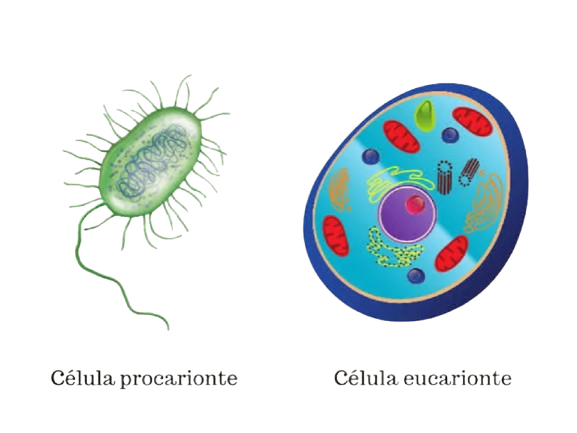

Você sabe mesmo sobre citologia?
É muito comum ouvir dizer que “a célula é a unidade fundamental da
vida”, então, as organelas celulares compõem a maquinaria necessária
para o crescimento e desenvolvimento do ser vivo. Essas estruturas se
dispõem no citoplasma e desempenham as funções necessárias para cada
tipo celular.
No texto e Cards abaixo, você conhecerá melhor as diferentes Organelas
Celulares, como os Retículos Endoplasmáticos Liso e Rugoso, Ribossomos,
Mitocôndrias, Lisossomos, Peroxissomos, entre outros tipos. Além disso,
entenda a função dessas maquinarias e como elas se relacionam com o
papel de célula em um organismo.
Ao final, Você terá um quiz que aborda esse tema, assim, você testará o
seu conhecimento de acordo com as descrições nos cards. Vamos lá?
Apesar das diferenças, de uma maneira geral, podemos afirmar que todas
as células possuem membrana plasmática, citoplasma e material genético,
que pode ou não estar localizado em um núcleo. Quando uma célula não
possui núcleo definido, é chamada de procarionte, mas quando apresenta
núcleo, é denominada de eucarionte . As células animais e vegetais são
do tipo eucarionte, sendo assim, podemos dizer que elas são compostas de
membrana, citoplasma e núcleo. A membrana plasmática é a estrutura que
reveste a célula, controlando o que entra e sai dessas estruturas. O
citoplasma é a região entre a membrana e o núcleo onde estão localizadas
as organelas celulares, que se diferenciam nos dois tipos celulares. Por
fim, o núcleo é a região em que estão armazenadas as informações
genéticas de cada ser vivo.

As células animais e vegetais são do tipo eucarionte, sendo assim,
podemos dizer que elas são compostas de membrana, citoplasma e núcleo. A
membrana plasmática é a estrutura que reveste a célula, controlando o
que entra e sai dessas estruturas. O citoplasma é a região entre a
membrana e o núcleo onde estão localizadas as organelas celulares, que
se diferenciam nos dois tipos celulares. Por fim, o núcleo é a região em
que estão armazenadas as informações genéticas de cada ser vivo.
Diferenças entre as células animais e vegetais
As células animais e vegetais apresentam algumas diferenças básicas que
permitem a sobrevivência do organismo em diferentes situações. Os
animais, por exemplo, ingerem alimentos que fornecem matéria orgânica
para a célula, o que não ocorre nas plantas. No caso dos vegetais, que
são sésseis e não captam seu alimento, as células necessitam de outra
forma para adquirir matéria orgânica para a produção de energia,
apresentando, portanto, organelas especializadas para esse fim.
As células animais apresentam como organelas típicas os lisossomos e os
centríolos
A primeira característica que podemos usar para diferenciar uma célula
animal de uma vegetal é a presença de parede celular. Nas células
animais, esse envoltório não está presente, sendo, portanto, uma
característica exclusiva da célula vegetal. A função dessa estrutura é
dar maior resistência à célula e protegê-la da ação de organismos que
podem causar danos e doenças.